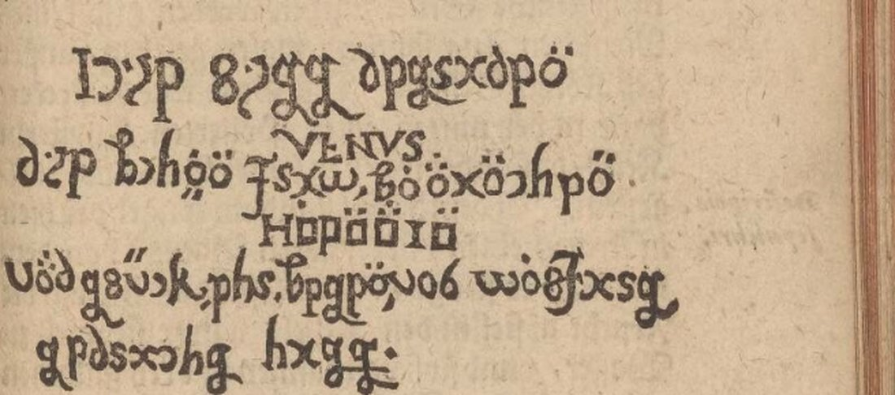
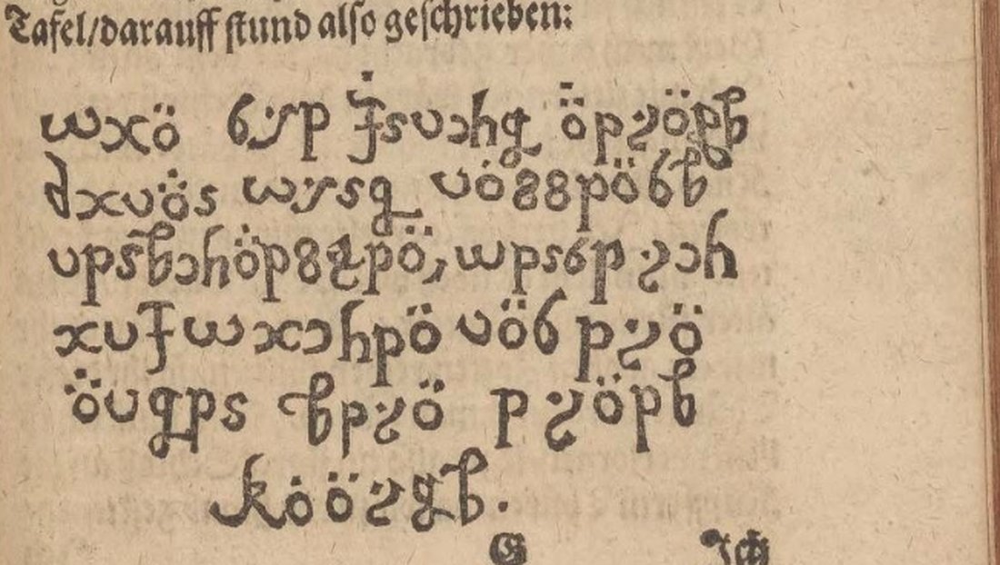
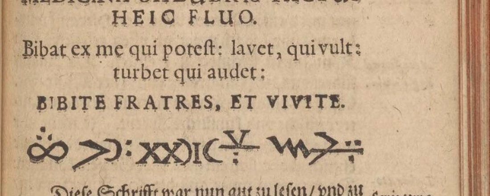
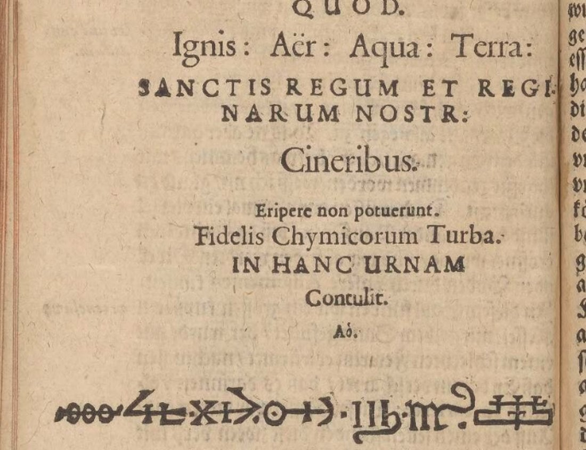

At a glanceKey from adjacent plaintext · complete
- The document
- Not a letter: the first edition of the Chymische Hochzeit Christiani Rosencreutz (Strassburg, 1616), attributed to Andreae. The catalogue had listed it as a ciphered letter.
- Where
- Embassy of the Free Mind (Ritman Library), Amsterdam; DECODE R4502. Four pages carry cipher (pp. 73, 95, 97, 116).
- The cipher
- Two inscriptions in an invented 19-symbol alphabet cut as type, and two lines of alchemical and numeral signs that stand for dates.
- How it was read
- The page boy gives the text of both inscriptions in the next paragraph, and the alphabet was recovered from that pairing.
- What it says
- “Here lies buried Venus, the fair lady…”, and the tablet that promises a king’s mother. The date lines are given as 1378 and 1459.
- Still open
- The date lines fit the published years as wholes, but not every sign in them is identified.
- Credit
- Dates from the crcsite.org edition of Foxcroft’s 1690 translation.
01 The book, not a letter
DECODE R4502 was uploaded by the Embassy of the Free Mind with the title "Johann Valentin Andreae, 'Chymische Hochzeit Christiani Rosenkreutz'", eight images and a note: "This rosicrucianism book in German has four pages with ciphertext. As far as is known, this has never been deciphered." The owner adds that the library holds three copies and only one was photographed. When DECODE's catalogue was imported here, the import script classified the record as a "letter to an unknown recipient". The images show the title page (Strassburg, "In Verlägung Lazari Zetzners S. Erben", 1616) and five openings, pp. 72–73, 94–95, 96–97, 98–99 and 116–117, and the colophon (Conrad Scher, 1616). The four with cipher are:
- p. 73, Day IV: a line of signs under the fountain inscription Hermes Princeps … Bibite fratres, et vivite;
- p. 95, Day V: the words in copper letters on the iron door to Venus's vault;
- p. 97, Day V: the tablet behind the bed where Venus sleeps;
- p. 116, Day VI: the line after Anno at the foot of the urn inscription.
02 The door to Venus's vault, p. 95

HIE LIGT BEGRABEN VENUS DIE SCHON[E] FRAW SO MANCHEN HOHEN MANN UMB GLUCK EHR SEGEN UND WOLFART GEBRACHT HATT
"Here lies buried Venus, the fair lady who has brought so many high men to lose fortune, honour, blessing and welfare." The narrator copies it "into my writing tablet". On the next page, when he asks what the tomb means, the boy answers: "hie ligt begraben (sagt er) Venus die schöne Fraw / so manchen hohen Mann umb Glück / Ehr / Segen und Wolfart gebracht hatt" (p. 96).
03 The tablet behind the bed, p. 97

WAN DIE FRUCHT MEINES BAUMS WIRT VOLLENDS VERSCHMELZEN WERDE ICH AUFWACHEN UND EIN MUTER SEIN EINES KONIGS
"When the fruit of my tree has quite melted, I shall awake and be the mother of a king." On p. 98 the boy repeats what he heard Atlas tell the King: "wann der Baum … wirdt vollends verschmeltzen / so wirdt Fraw Venus wider erwachen / vnd sein ein Mutter eines Königs".
04 The alphabet
Both inscriptions use one simple substitution. There is one sign per letter, words are divided, and there are no nulls or code words. The 156 letters use 19 signs, with one capital form (the initial H). U and V share a sign. M, N and O are three dotted variants of one shape. The pairs are fixed by words the boy's glosses supply: B-E-G-R-A-B-E-N gives b, e, g, r, a, n; F-R-A-W gives f, w; G-L-U-C-K gives l, u, c, k; F-R-U-C-H-T gives h, t; and so on. Every sign that occurs has a value, and the table applied to both texts gives no contradiction. The alphabet is the author's own: only 20 letters of German occur, and there is nothing to compare it with.
| Letter | A | B | C | D | E | F | G | H | I | K | L | M | N | O | R | S | T | U/V | W | Z |
|---|---|---|---|---|---|---|---|---|---|---|---|---|---|---|---|---|---|---|---|---|
| Stand-in | x | d | c | 6 | p | J | g | h, H | z | k | 8 | m | n | o | s | b | q | v | w | Z |
The stand-ins are the Latin letters the signs most resemble. The full table with descriptions of the shapes is in
targets/andreae1616/key.tsv, and decode.py turns the transcription into the plaintext.
05 The two sign lines: dates


These two lines are not letter ciphers. They mix Roman numerals with alchemical and planetary signs, and they are dates. The English edition on crcsite.org, which follows Foxcroft's translation of 1690, gives 1378 for the fountain line (footnote 12) and 1459 for the urn (footnote 21). It also interprets the ligature at the right end of the urn line as P.H.M.D., "Paracelsus Hohenheimensis Medicinae Doctor". 1378 is the birth year the Rosicrucian manifestos give Christian Rosencreutz. 1459 is the year on the title page.
Checked against the signs: the urn line has four rings (CCCC), an IX and an M, which fit M CCCC L IX. The fountain line opens with a lemniscate carrying three dots, ∞ being an old sign for 1000, and it has XX and a V with dots, which fit M CCC LXX VIII. Both interpretations are graded C (probable): the structure agrees with the published years, but the signs for L and for the smaller units are not identified one by one, and each line is too short to fix them.
06 What stays open
- The individual numeral signs of the two date lines (grade C as wholes). They are one-off symbolic dates of about ten signs each, too short to fix every value.
- The three dotted signs for M, N and O were separated with the plaintext in view: at DECODE's resolution, about 1,450 px per opening, the dots are too small to tell them apart blind. A better image would settle them. The other 16 signs are unambiguous and fix the text by themselves.
- The other two Ritman copies were not photographed. The 1616 edition was printed from standing type, so they should carry the same inscriptions.
DECODE should list R4502 as decrypted: a printed book, not a letter, with a simple substitution plus two symbolic dates. The correction is queued.
Full texts
The transcription and the decryption of every document on this page, so that the reading can be used and checked. Short files are shown here; all are in the repository.
Chymische Hochzeit (1616), inscriptions pp. 73, 95, 97, 116
The secret-script inscriptions of Andreae's novel Chymische Hochzeit Christiani Rosencreutz (Strassburg 1616), not a letter: the copper door of Venus's vault ('here lies buried Venus, the fair woman who has brought many a high man to ruin of fortune, honour, blessing and welfare') and the tablet behind her bed (when the fruit of my tree is fully melted, I shall awake and be the mother of a king). The novel glosses both itself; the two sign lines on pp. 73 and 116 read as the dates 1378 and 1459 (graded C).
Transcription
# p.95 (Dies V), copper door; 'VENUS' and 'HOHEN' printed in Roman capitals over the line, not ciphered Hzp 8zgq dpgsxdpn 6zp bchon Jsxw bo mxnchpn mxnn vmd g8vck phs bpgpn vn6 wo8Jxsq gpdsxchq hxqq # p.97, tablet behind Venus's bed wxn 6zp Jsvchq mpznpb dxvmb wzsq vo88pn6b vpsbchmp8Zpn wps6p zch xvJwxchpn vn6 pzn mvqps bpzn pznpb konzgb
Decryption
# p.95 (Dies V), copper door; 'VENUS' and 'HOHEN' printed in Roman capitals over the line, not ciphered HIE LIGT BEGRABEN DIE SCHON FRAW SO MANCHEN MANN UMB GLUCK EHR SEGEN UND WOLFART GEBRACHT HATT # p.97, tablet behind Venus's bed WAN DIE FRUCHT MEINES BAUMS WIRT UOLLENDS UERSCHMELZEN WERDE ICH AUFWACHEN UND EIN MUTER SEIN EINES KONIGS
Decryption
# Readings of all four inscriptions (pp. 73, 95, 97, 116), copied verbatim from NOTES.md. The two letter inscriptions are also in reading.txt (output of decode.py on ciphertext.txt).
| Page | Where in the story | Kind | Reading |
|---|---|---|---|
| p. 73 (Day IV) | under the Hermes Princeps fountain inscription, after *BIBITE FRATRES, ET VIVITE* | line of alchemical/numeral signs | a date; 1378 in the crcsite.org edition (footnote 12), graded C here |
| p. 95 (Day V) | the copper door to Venus's vault | letter cipher, 70 letters | HIE LIGT BEGRABEN VENUS DIE SCHON[E] FRAW SO MANCHEN HOHEN MANN UMB GLUCK EHR SEGEN UND WOLFART GEBRACHT HATT |
| p. 97 (Day V) | the tablet behind Venus's bed | letter cipher, 86 letters | WAN DIE FRUCHT MEINES BAUMS WIRT VOLLENDS VERSCHMELZEN WERDE ICH AUFWACHEN UND EIN MUTER SEIN EINES KONIGS |
| p. 116 (Day VI) | after *Anno* on the urn inscription | line of signs | a date; 1459 in the crcsite.org edition (footnote 21), graded C here |
On p. 95, *VENUS* and *HOHEN* are printed in Roman capitals above the cipher line and are not enciphered.
## The two sign lines (pp. 73, 116)
These are not letter ciphers. They are strings of alchemical, planetary and Roman-numeral signs, read as dates.
- **p. 116**, printed after "A[nn]o.": four ring signs, then signs including XIX and M, then a ligature group
(P.H.M.D., which crcsite.org reads as "Paracelsus Hohenheimensis Medicinae Doctor"). The rings as CCCC, the IX
and the M fit M CCCC L IX = 1459, the year on the title page ("Anno 1459"). Graded C: the value 50 (L) is not
identified with certainty in the signs.
- **p. 73**: a lemniscate with three dots (∞, an old sign for 1000; the dots possibly CCC), two angle signs, XX,
a reversed C and I, V with dots, and a closing group. That fits the crcsite reading 1378, the birth year Fama/Confessio
give Christian Rosencreutz (M CCC LXX VIII). Graded C: the signs for L and the III are not identified individually.Reading
<!-- Reading of the two letter inscriptions in Andreae's Chymische Hochzeit (1616), pp. 95 and 97 (Claude Opus 5.5, 23 Oct 2026): reading.txt (decode.py on ciphertext.txt) put into sentences, word division and capitals only; no letter changed. VENUS and HOHEN on p. 95 are printed in clear over the line and are not enciphered. The two sign lines of pp. 73 and 116 are dates (1378, 1459), not prose; see texts/R4502_decryption.md. --> # Andreae, Chymische Hochzeit (1616): the two letter inscriptions ## Reading p. 95, the copper door to Venus's vault: Hie ligt begraben Venus, die schon Fraw, so manchen hohen Mann umb Gluck, Ehr, Segen und Wolfart gebracht hatt. p. 97, the tablet behind Venus's bed: Wan die Frucht meines Baums wirt uollends uerschmelzen, werde ich aufwachen und ein Muter sein eines Konigs.
Translation
<!-- English translation of texts/R4502_reading.md (Claude Opus 5.5, 23 Oct 2026). --> # Andreae, Chymische Hochzeit (1616): the two letter inscriptions, English translation p. 95, the copper door to Venus's vault: Here lies buried Venus, the fair woman who has robbed so many a high man of fortune, honour, blessing and welfare. p. 97, the tablet behind Venus's bed: When the fruit of my tree has wholly melted away, I shall awake and be the mother of a king. Note: "umb ... gebracht" is the Early New High German idiom "bring someone out of (deprive him of)" his fortune, honour, blessing and welfare.
Key: key.tsv
07 Sources
- Embassy of the Free Mind (Ritman Library), Chymische Hochzeit, Strassburg 1616: DECODE R4502, public images 2–8.
- The novel's own glosses: pp. 96 and 98 of the same edition; also the transcription of the 1616 print in the Deutsches Textarchiv, which leaves the inscriptions out as figures.
- E. Foxcroft (tr.), The Hermetick Romance: or The Chymical Wedding, London 1690, in the online edition of the Confraternity of the Rose Cross: Day 4 (note 12), Day 5 (notes 14, 15), Day 6 (note 21).
Transcription, sign table, decoder and notes: targets/andreae1616/.